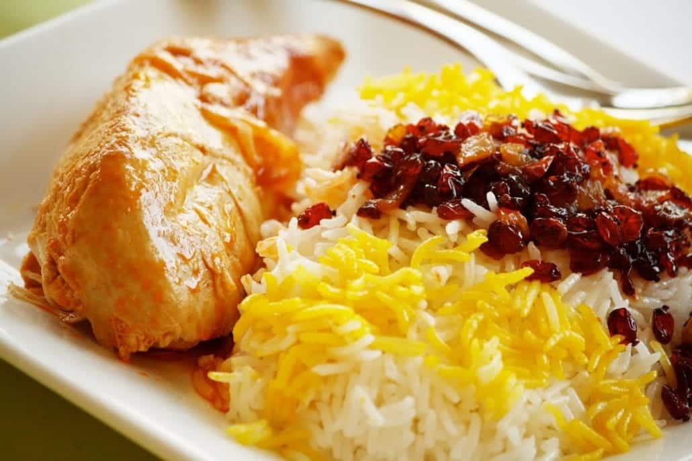

Zereshk Polo

Description
Zereshk polo morgh is one of the most famous dishes in Persian cuisine. It's full of wonderful flavors such as saffron, turmeric and barberry.
This Persian chicken and rice recipe is another beloved classic. Saffron rice topped with delicious chicken strikes a perfect balance between being easy enough for a weeknight dinner and fancy enough for an elegant Persian feast!
Ingredients
- Saffron
- Barberries
- Rice
- Chicken
Steps
Liquid Saffron
- Place the ice cubes in a very small cup and sprinkle saffron on top. Let it sit in room temperature until fully melted and saffron is dissolved. For more details, check out how to bloom saffron.
Tomato Paste Sauce
- Heat oil in a sauce pan over medium heat.
- Add turmeric, salt and pepper and let the spices mix for 30 seconds.
- Add tomato paste and saute until dark red.
- Add water and bring to boil, let it simmer for 2-3 minutes. Put it aside.
Chicken and Veggies
- Sprinkle the chicken thighs generously with salt and pepper.
- Heat oil in a big pan over medium heat.
- Add butter and let it melt.
- Put the chicken thighs in the pan, skin side down.
- Pour liquid saffron all around the pan, tilt the pan a bit so the saffron gets to the skin.
- Sear the chicken until the skin is golden brown and crispy, about 7 minutes.
- Flip the chicken thighs so the other side also gets golden brown. About 5 minutes.
- Take the chicken thighs out of the pan, add onion, bell pepper and carrots to the pan. There is no need for more oil as the chicken thighs have rendered fat.
Saute the veggies for 2 minutes and place the chicken on them, skin side up.
- Add the tomato paste sauce to the pan and add the liquid saffron.
Bring to simmer and let it cook on low heat for 40-45 minutes until veggies are soft and the chicken is fully cooked.
- Meanwhile make the rice.
- minutes before serving, prepare the barberries:
- Put the barberries, water, oil, sugar and liquid saffron. Let it sit for 10 minutes.
- Put the pan on low heat and cook the barberries until bright red and shiny.
To Serve:
- Take 4-5 tablespoon of Persian style rice and mix it with 2 tablespoon liquid saffron, set it aside. You can mix some cooked barberries into it or just serve the barberries on top.
- Serve some Persian style rice on a plate and add the saffron barberry rice on top of it.
- Serve the chicken on the side with some sauce drizzled on top and some served in a bowl for additional taste.